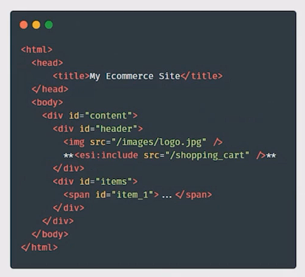

Hola 👋, Soy Jose

| 10 años | 1 año | 3 años |

|

Ventajas
- Modularidad -> se pueden desarrollar y desplegar de forma independiente.
- Escalabilidad -> se puede escalar cada parte según sea necesario.
- Versatilidad -> usar diferentes tecnologías y lenguajes.
- Rapidez de actuación -> desarrollo menos costoso.
- Mantenibilidad -> mejoras independientes.
- Agilidad -> Reusar código de terceros.
MICROFRONTEND
Surge en el 2016 por primera vez
“ Microfrontends es la representación técnica de un subdominio de negocio, que permite la implementaciones independientes con la igual o distinta tecnología. Por último, se debe evitar compartir logica con otros subdominios y son propiedad de un único equipo”
Luca Mezzalira Vicepresidente de arquitectura en DAZN
Frontends monolíticos

Los problemas del monolito
- Mantenimiento -> código desarrollo por muchos de distintos niveles y a lo largo de tiempo, se vuelve complejo.
- Conflictos de código -> desarrollos en paralelo sobre un mismo repositorio. Los merges de la muerte
- Una sola técnología -> el monolito implica amplicar una única tecnología en todo la aplicación.
- Entrega continua -> las funcionaldiades deben estar completas.
Organización vertical Microfrontend

쮺uándo es recomendable usar esta metodología?
- Grandes aplicaciones
- Múltiples equipos
- Tiempos de entraga distintos
Beneficios
- A ser más pequeña la aplicación carga más rápido
- Merge más simples
- Reducción de conflictos entre Merge de otros equipos
- Múltiples framework, según el problema. Transparente al cliente
쮺uándo no usar esta metodología?
- Pequeños equipos
- Cuándo los mircofrontend compliquen el desarrollo
- Cuando no estemos usando métodos automáticos de despliegue
- Cuando el equipo sea demasiado junior.
Cómo trocear la aplicación
- Por página Seguro Si tiene un buen enrutamiento, puede ejecutar microaplicaciones específicas separadas para cada página.
- Por funcionalidad Aisalar funcionalidades en una página
Responsabilidad de los equipos

Técnicas montar esta arquitectura
Build-time integration
Paquetizar los módulos y crear un paquete que los importe y gestione todos. Por ejemplo una PWA쯈uién lo usa?

Run-time integration via iframes
Recuperar el uso de los iframe쯈uién lo usa?
Web components
Similar a iframe, pero en vez de frames cada front se transforma en un web component

쯈uién lo usa?

Reservas de mesa en restaurantes
Server-side template composition
Se utiliza una página como plantilla, que contiene secciones donde cargaran cada uno de los frontales

쯈uién lo usa?
Edge Side Includes
Html extendido que permite a nodos extremos renderizar es1:includes, facilita el cacheo pero está en desuso.
쯈uién lo usa?
Meta framework
BIT
Muy común y con muchas recomendaciones, es de pago.
Webpack 5 and Module Federation
Mucha gente conoce ya webpack, es complejo de configurar. Crea un bundle de módulosSingle SPA
Se crea un orquestador que controla el resto de Frontends y mediente un builder se generan los modulos y se unenOtros
- Systemjs
- Piral
- Open Components
- Qiankun -> basado en single-spa.
- Luigi
- FrintJS
쮺칰al usaremos en la prueba?
Podium

Módulos que nos ofrece Podium
@podium/layout
Base de todos los microfront. Él tiene la responsabilidad de montar todos
Necesita de un servidor para poder funcionar (Express, Hapi, Fastify)
@podium/podlet
Es el encargado de exponer la configuración (js y css) del microfront.
@podium/browser
Actualmente sólo sirve como gestor de mensajes entre Frontends
Cambios en App Vue
Cambio en public/index.html
Script de arranque
Configuración de podlet
Site
La página la conforman 5 microfront.
- Cabecera
- Emisor
- Receptor
- Pie
- Login
Recursos
Suite ejemplo
Presetación: mf-presentation
Template para la creación de microfont en podium vue-microfront-podium